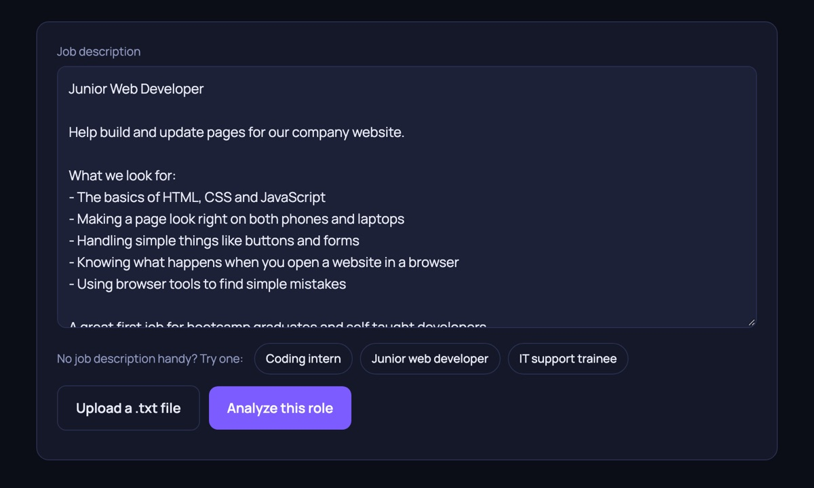

Problem
Candidates rarely know what a specific role will test. Generic prep (LeetCode lists, static question banks) does not adapt to the job description, and almost none of it lets you practise explaining an answer out loud, which is how real technical rounds are judged.
Solution
Prepwise reads a job description, works out the round type and the level of the role, builds an adaptive question set with multiple choice and spoken questions, grades every answer with AI, and ends with a debrief grounded in your actual scores.
How it works
1Paste a JDOr tap one of three beginner examples.
2AI analysisRound type, level (Entry, Mid, Senior) and focus topics.
3Adaptive questions5, 20 or 30 questions that get harder for the level.
4Answer and learnSpeak or tap. AI grades and explains every answer.
5DebriefScores by category, focus areas and a next step.



Tech stack
- Google Gemini API for analysis, questions, grading and the debrief
- Supabase Edge Function holds the API key and all four prompts server side
- Web Speech API for voice answers, with a typed fallback
- HTML, CSS, JavaScript on Replit, no framework
- Postman collection testing the live backend
GenAI engineering highlights
- Level aware prompts: each level climbs its own difficulty ladder, so an intern JD gets beginner questions
- Grounded debrief: weak areas are computed from scores, so the model cannot invent weaknesses
- Fair questions: exactly one correct option, shuffled answer slots, and a note on why each option is wrong
- Resilience: retries with backoff for Gemini's frequent 503s, and rounds survive a page reload
What's next
- Sign in and session history in Supabase
- Follow up sessions on weak areas only
- PDF job description and CV upload
- Coding editor for coding rounds
- Behavioral round prep